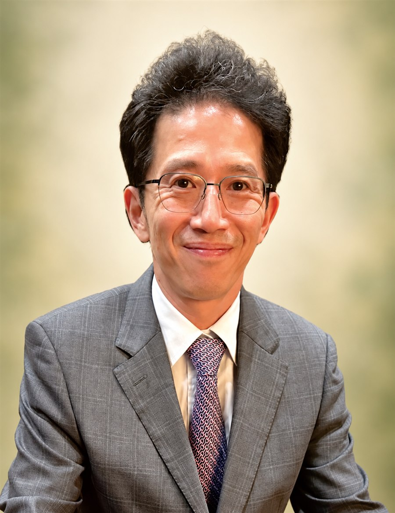

為教育添一分力量，
為孩子多開一扇窗。
民國 84 年，陳正義創會董事長與熱心董事捐助新臺幣 345 萬元，作為基金會創立本金。其後，榮譽董事長陳金芳先生陸續捐助 450 餘萬元，歷屆家長會長及許多熱心人士也持續襄助，為宜中教育發展累積長遠支持。自民國 115 年起，現任董事長江文傑先生接任帶領，延續基金會支持宜中教育的初心。
讓每一份支持，走進教育現場
- 01
拓展學習視野支持數理科技、人文社會、文化藝術與體育等多元學習，拓展視野、培養專長。
- 02
陪伴師生發展鼓勵教師教學研究，獎助優秀學生，支持資源不足的學生安心向學。
- 03
鼓勵卓越與交流獎勵師生對外競賽表現，支持國際交流活動。
- 04
支持校務推動依教育發展需要，協助校務與學生學習活動。
感謝每一位校友、家長與關心教育的朋友，將心意交付給宜中。這份信任，陪伴師生把想法一步步實踐，也讓更多孩子有機會安心學習、勇敢追夢。
宜蘭高中教育基金會 敬上
董事長 江文傑CHAIRPERSON
江文傑 董事長
伍豐木業負責人
第九屆董事會任期自民國 114 年 12 月 27 日至 117 年 12 月 27 日。承接歷屆董事的耕耘，與董事團隊一同為宜中教育發展盡心。
共築教育未來
第九屆董事會
新一屆董事會接棒同行，凝聚多方心力，支持宜中持續培育優秀人才。
任期：民國 114 年 12 月 27 日至民國 117 年 12 月 27 日
法人登記公告：115 宜院偉登字第 015747 號 ↗
歷屆董事餐會
相聚紀實。
從董事會議與餐敘的相聚時刻，回望歷屆董事為宜中教育同行的身影。相片依屆次與活動整理，點選縮圖即可放大瀏覽。
第九屆董事會
第一次會議暨餐敘
第七屆董事會
會議與年終餐敘
第四次董事會議暨年終尾牙・108.12.31
董事長尾牙致詞感謝大家支持；校長感謝一年來董事長及董事對宜中的付出。
第三次董事會議・108.10.30
董事長致詞感謝董事蒞臨及對基金會的支持；校長致詞感謝董事對基金會的付出；基金會創會董事長陳正義發表感言令人動容。
謝謝每一份
珍貴的支持。
您所捐助的每一筆款項，都是支持宜中師生前行的力量。謹向所有捐款人致上誠摯謝意。
捐款聯繫
本校教育基金會捐款帳戶
彰化銀行（銀行代號 009）
帳號：4202-01-208957-00
戶名：財團法人國立宜蘭高中教育基金會
聯絡人：周秘書
電話：03-9324153 轉 101
Email：t101@gapp.ylsh.ilc.edu.tw
115 年捐款明細
統計至 115 年 10 月
董事會成員
董事長
| 捐款人 | 日期 | 金額 |
|---|---|---|
| 江文傑先生 | 115/05/06 | NT$100,000 |
常務董事
| 捐款人 | 日期 | 金額 |
|---|---|---|
| 林光義先生（慈恩獎助學金・第1學期） | 115/01/02 | NT$40,000 |
| 林光義先生（慈恩獎助學金・第2學期） | 115/04/23 | NT$40,000 |
| 林文崢先生 | 115/03/20 | NT$30,000 |
| 簡福星先生 | 115/05/12 | NT$30,000 |
| 張致祥先生 | 115/07/06 | NT$30,000 |
| 陳正義先生 | 115/06/25 | NT$30,000 |
董事
| 捐款人 | 日期 | 金額 |
|---|---|---|
| 張聖謙先生 | 115/04/13 | NT$30,000 |
| 簡茂男先生 | 115/04/28 | NT$20,000 |
| 劉得均先生 | 115/02/24 | NT$20,000 |
| 賴榮秋先生 | 115/03/20 | NT$20,000 |
| 黃有琳先生 | 115/03/20 | NT$20,000 |
| 陳忠志先生 | 115/03/20 | NT$20,000 |
| 簡心緹女士 | 115/03/26 | NT$20,000 |
| 莊家銘先生 | 115/04/27 | NT$20,000 |
| 邱嘉進先生 | 115/04/27 | NT$20,000 |
| 李建國先生 | 115/04/28 | NT$20,000 |
| 錢茂林先生 | 115/05/05 | NT$20,000 |
| 陳俊諺先生 | 115/06/22 | NT$20,000 |
| 周思佳女士 | 115/08/19 | NT$20,000 |
林燈文教公益基金會
| 捐款單位（指定用途） | 日期 | 金額 |
|---|---|---|
| 財團法人林燈文教公益基金會（籃球隊專款） | 115/09/11 | NT$1,733,200 |
| 財團法人林燈文教公益基金會（數理科學菁英人才培育計畫） | 115/02/26 | NT$960,000 |
| 財團法人林燈文教公益基金會（阿卡貝拉校園課後培訓計畫） | 115/09/15 | NT$115,934 |
扶輪之子計畫
| 捐款單位（指定用途） | 日期 | 金額 |
|---|---|---|
| 宜蘭南區扶輪社（莊家銘主委推動扶輪之子計畫） | 115/09/01 | NT$132,000 |
| 台北城中扶輪社（扶輪之子計畫） | 115/08/24 | NT$24,000 |
| 宜蘭縣礁溪扶輪社（扶輪之子計畫） | 115/08/27 | NT$24,000 |
獎助學金
| 捐款人／單位（指定用途） | 日期 | 金額 |
|---|---|---|
| 廣運科技股份有限公司（廣運品學兼優定期考獎助學金） | 115/01/02 | NT$500,000 |
| 李氏「金漁」互助獎助學金 | 115/04/17 | NT$80,000 |
| 林國維先生（林戊申先生獎助學金） | 115/09/21 | NT$36,000 |
| 徐鳳霞獎學金 | 115/06/18 | NT$24,000 |
校隊與競賽專款
| 捐款人／單位（指定用途） | 日期 | 金額 |
|---|---|---|
| 金元福包裝企業股份有限公司（籃球隊專款） | 115/08/07 | NT$200,000 |
| 社團法人宜蘭縣福氣家族公益協會（田徑隊專款） | 115/08/18 | NT$150,000 |
| 財團法人中台山佛教基金會（體育競賽專款） | 115/07/02 | NT$100,000 |
| 台北群星扶輪社（足球隊專款） | 115/05/05 | NT$60,000 |
| 藍仲民先生（足球隊專款） | 115/05/05 | NT$20,000 |
| 鉅仁企業有限公司（足球隊專款） | 115/04/09 | NT$10,000 |
其他人才培育與學習計畫
| 捐款人／單位（指定用途） | 日期 | 金額 |
|---|---|---|
| 邱錦源先生（數理資優班專款） | 115/01/20 | NT$50,000 |
| 蔡惠玉（向前走，TASA 火箭盃競賽贊助） | 115/06/17 | NT$50,000 |
| 蘇正義先生（偏鄉遠距教學計畫） | 115/09/18 | NT$10,000 |
| 康豈瑋先生（數理科學菁英人才培育計畫） | 115/02/26 | NT$5,000 |
| 黃建勳先生 | 115/05/19 | NT$20,000 |
涓滴善意，匯成宜中的力量。
謝謝您與我們一起，陪伴孩子安心學習、勇敢探索。